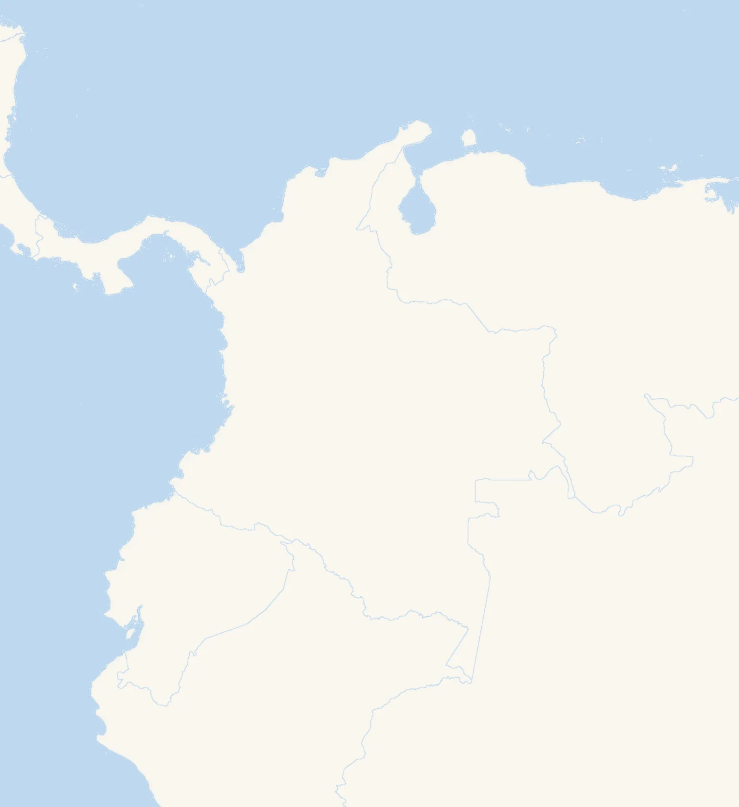
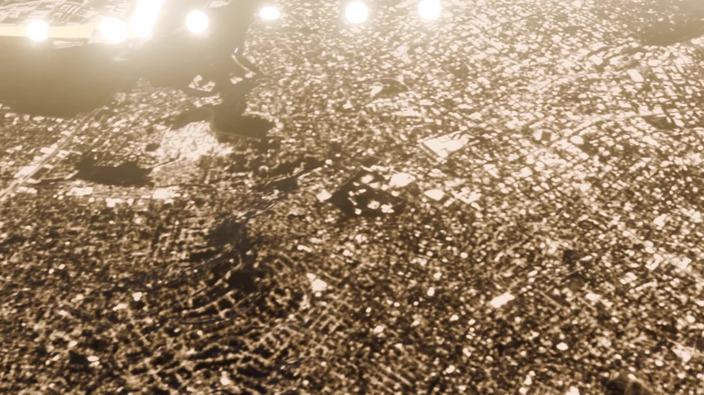

Capítulo 03 Interconexiones eléctricas
La red que cruza fronteras.
Sigue los intercambios de electricidad y explora los corredores que conectan a Colombia con sus vecinos.
Cordillera andina · Vuelo renderizado en Blender
01 · El video Capítulo 03
La red que cruza fronteras.
Los cables de alta tensión no se detienen en la frontera. Míralo y luego sigue los intercambios de 2024 y los corredores con Ecuador, Panamá y Venezuela.
- Formato
- Vertical 9:16
- Duración
- —
- Capítulo
- 03 · Red
02 · XM Flujos físicos
El pulso de 2024.
Explora cómo cambiaron los intercambios eléctricos en los meses de la crisis de Ecuador. Las series corresponden al sistema colombiano.
Intercambios internacionales
Cargando datos…
03 · Mapa Norte de Sudamérica y Centroamérica
Los cables de la frontera.
Elige un corredor para ubicarlo y consultar qué representa.

Jamondino–Pomasqui
Corredor Colombia–Ecuador documentado a 230 kV. El límite de transferencia cambia con las condiciones operativas.
Consultar fuente ↗Trazos verdes: líneas de transmisión cartografiadas en OpenStreetMap. El trazo punteado señala el corredor de forma esquemática.
04 · Ecuador 2024
Cuando faltó el agua.
El informe anual del operador ecuatoriano vincula los racionamientos de 2024 con el déficit hidroeléctrico y los bajos niveles de los embalses.
Informe anual de CENACE ↗ Cronología del Banco Central del Ecuador ↗
Siguiente Capítulo 04
La costa no duerme.
Continuar el recorrido